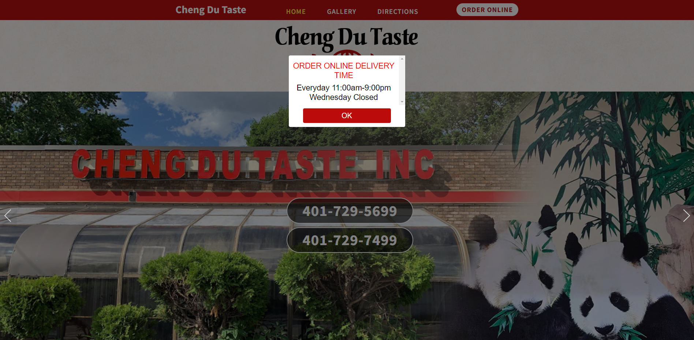
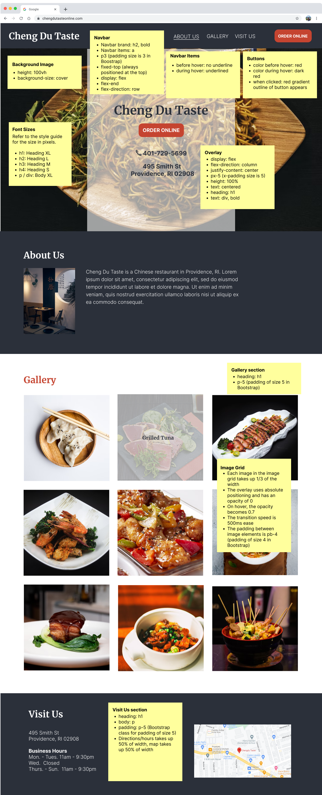
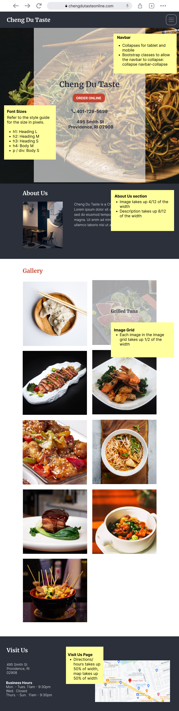
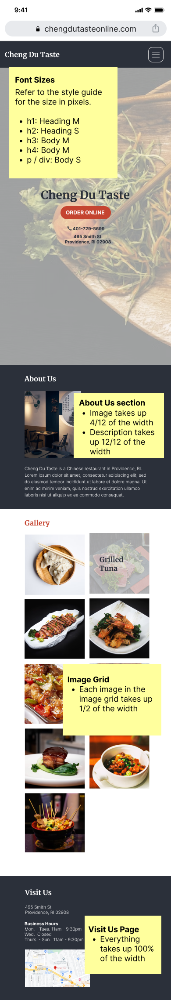

Designing and Implementing a Responsive Webpage for Cheng Du Taste
Background
Cheng Du Taste is a Sichuanese restaurant in Providence, Rhode Island. Customers can order from the
restaurant on the website, or
they can order by phone or third-party food delivery apps.
I chose to redesign Cheng Du Taste's website because I found it hard to
use last year, and ended up ordering from the restaurant using Uber Eats rather than the restaurant's
website. I wanted to improve the
design so that potential customers have a better experience using the site.
The link to Cheng Du Taste's website can be found here.

Objective
My aim was to:
- Analyze and identify flaws in the Cheng Du Taste website
- Create low-fidelity and high-fidelity prototypes for a variety of screen sizes
- Build a responsive website based on the prototypes
Identifying Usability Problems
Usability
I found many usability problems on the home page:
- There is no feedback when pressing buttons
- I often expect the button to close a popup to be on the top, but it is on the bottom
- On the mobile site, the popup covers the order online button, which can be confusing for the user
- It's hard to read the popup since it's not completely opaque against the background, and has white text on a
red background
- The map doesn't show where the restaurant is, since there is no pin for the location
- When you hover over some of the photos, the label just says "Photo" and does not have a specific image description
- Having three separate pages is unnecessary; the content on the gallery and directions page is already on the
home page
Accessibility
I used WebAIM WAVE to detect potential accessibility problems on the current website. These were the
accessibility problems that it found:
- The website has very little alt text for images, even though the site itself has a lot of image content
- There is very low contrast between the text and background
Generally, I agreed with the problems detected. Alternative text and sufficient contrast are very important
to make websites accessible, especially for viewers who may use screen readers and/or have limited eyesight.
Visual Redesign
Low Fidelity Prototypes
I used Balsamiq to create 3 wireframes for each type screen size (mobile, tablet, and desktop). For the
low-fidelity prototypes, I wanted
to focus on the usability problems that I found. The major changes that I made were:
- Making website to be a single page website rather than multi page. This optimizes the
experience for mobile users who are used to scrolling, and minimizes repeated information.
- Making the navbar fixed at the top, where selecting the link scrolls to the corresponding page
position. This allows users, especially those on a laptop, to navigate the page smoothly.
- Adding labels to the images in the image gallery. This allows users to learn what dish each
image shows.
- Putting the important information, like the phone number and address on the splash page.
Users should not have to scroll to find important information.
- Removing the popup from the website. The modal was more confusing and helpful, and putting the important information in the home page made more sense.
- Fixing the embedded map to show the restaurant location correctly.
Other usability/accessibility issues, such as button feedback, labels, alt text, and aria labels were focused on in the high-fidelity prototypes.
Style Guide
I created a visual design style guide to show the colors, typography, and reusable component states.
High Fidelity Prototypes
Next, I created high fidelity prototypes for each screen size. The flexbox, padding, margins, and components like
buttons and the navbar were mostly
configured using Bootstrap classes. The documentation for Bootstrap can be found here.
Web

Tablet

Phone

Responsive Redesign
Finally, I created the page using HTML and CSS. The website follows the high fidelity prototypes to ensure that
the website is usable and accessible. In addition to the changes made in the low fidelity prototype, all images have alt text, and the navbar has aria labels.
Additionally, to line up more with the physics aspect of a user's conceptual model, I added smooth scrolling to the navbar.
The URL to the page is https://unemployedpangolin015.github.io/responsive-redesign/
Conclusion
I had three major learnings from redesigning the Cheng Du Taste website.
- Simplicity in both layout and font is very important for helping users navigate a website.
- CSS libraries like Bootstrap allow for faster iteration.
- Formalizing the style before creating high fidelity prototypes allows for better consideration of how component state should change to help the user.